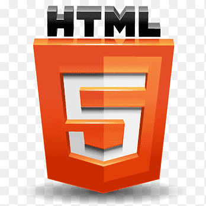

Skills

HTML

CSS

JavaScript
I'm a tech enthusiast with a passion for the outdoors. When I'm not learning /engagign with code you can find me enjoying Souther Californias perfect weather with any of the following acitvities. whether that be hiking, camping, surfing or biking.
My journey to become a front-end web developer has been both challenging and rewarding. It's been so exciting to be a full time learner and to continually build new skills. I love being challenged and am excited about the growth process
HTML
CSS
JavaScript
Frequently Asked Questions
If you have any further quesitons about my projects, want to see my entire body of work or want to set up a call I can be reached at the following. Thakn you for taking the time to view my page, I look forward to connecting!